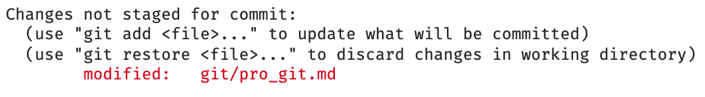
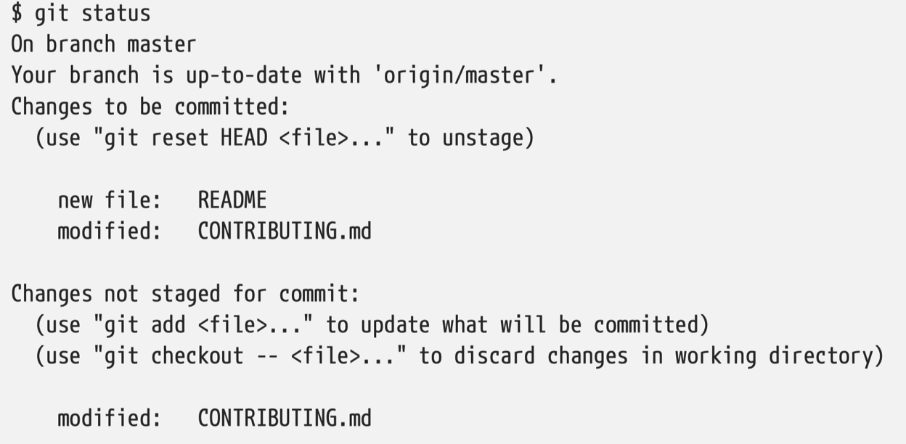
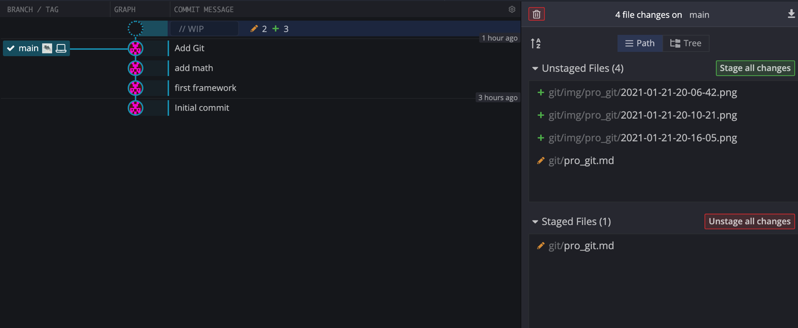
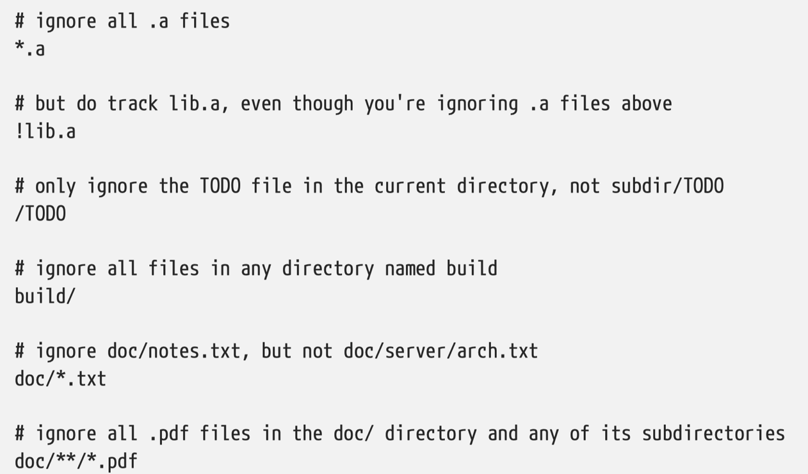
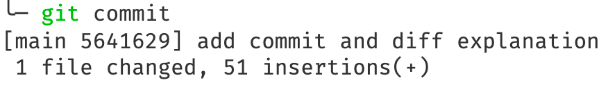
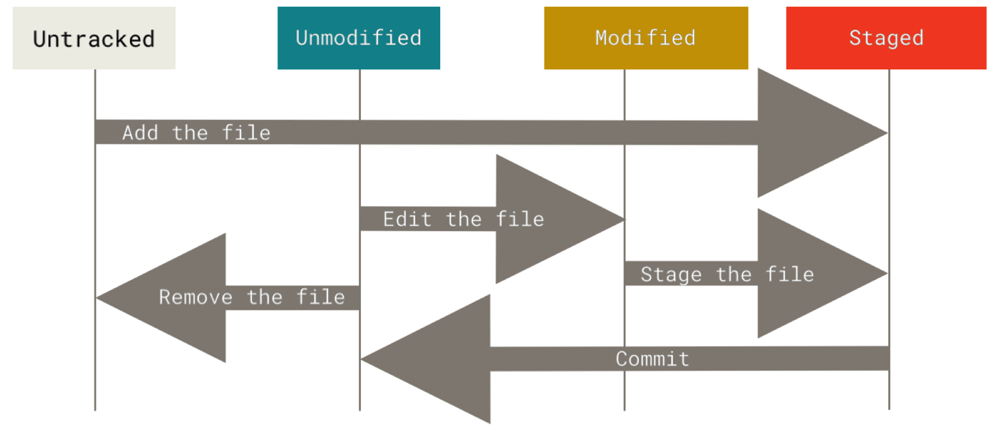

A serious guide to git 🇬🇧¶
This document is created because very few tutorials on Internet give a thorough introduction to git, instead a lot of homogeneous 10-minutes quick introductions are offered. Then people just wonder around stackoverflow to solve mysterious problems. This approach can appear to be easy at the beginning but quickly unsustainable. This is the V1 of a “hard” introduction that gives you a complete working knowledge of git. It’s heavily inspired by the pro git book available here.
General¶
install : https://git-scm.com/download/
setting ~/.gitconfig
Git needs the following information to know who commits
git config --global user.name "John Doe"
git config --global user.email johndoe@example.com
When you
git init, a branch calledmasterormaindepending on your git version is created.
Starting point¶
create a repository
git inittrack files
git add *.cclone a repository
git clone rep yourfolder(optional)
each file has two states: tracked or untracked
once tracked it has two states: modified and unmodifed
Once commited, it’s called staged
If modified but not commited, you see the following notification when running git status. Note the red text.

Run git add file to stage the file (which doesn’t mean it’s commited)
If you modify a file after you run git add, you have to run git add again to stage the latest version of the file. See the following snapshot:

The contributing.md is both staged and not staged because it has been modified since the last git add
Sometimes use a GUI interface like GitKraken is a good idea. See the screenshot below.

Use git status -s to get a concise report.
💯 Setting up a .gitignore file for your new repository before you get going is generally a good idea. / is to avoir recursivity and / at the end is to specify a directory. An exemple:

For python template, see here. For other languages, see here
Intermediate¶
git diff by itself doesn’t show all changes made since your last commit — only changes that are still unstaged. If you’ve staged all of your changes, git diff will give you no output. Instead, use git diff --staged. git --cached is a synonym.
Often people use git commit -m message directly, at the base level, git commit works, and you would enter the commit message using your text editor set by git config --global core.editor.
After you make a commit (you have to make a commit message whether you use -m or not). You get this kind of feedback. main is the branch, 5641629 is the SHA-1 checksum and the rest is statistics.

Finally you can also use git commit -a -m message to skip the staging part. Adding the -a option to the git commit command makes Git automatically stage every file that is already tracked before doing the commit, letting you skip the git add part.
This is the lifecycle of the status of your files.

Push¶
Run git show-ref to see the name after refs/heads/. Sometimes it’s master sometimes it’s main. See here. Accordingly, you should git push origin master/main.
Step back in your git workspace¶
remove files from Git after staging or committing
use `git rm file
remove the files in Git but not on your hard disk, very useful 👍
git rm --cached filerename a file
git mv, otherwise you would need to do
mv a.md b.md
git rm a.md # to remove a.md in git
git add b.md # to stage a
Follow/log¶
Use git log to see a commit history. Use -2 to see only 2 most recent log. -p to see diff information. Also see --pretty=oneline. But a more straightforward way is to use a GUI. Seriously, it can be useful when it comes to branches and merging.
Undo things¶
6.1 Change commit message¶
git commit --amend is used when you want to change the previous commit message and don’t want to clutter the commit space with tons of useless messages. Only amend commits that are still local and have not been pushed somewhere.
❗️ Amending previously pushed commits and force pushing the branch will cause problems for your collaborators.
6.2 Unstage¶
For example, let’s say you’ve changed two files and want to commit them as two separate changes, but you accidentally type git add * and stage them both.
git reset HEAD -- or git restore --staged file
Back to the last commit state, danger part¶
git restore git checkout -- file
:x: Don’t use this unless you know what you are doing since changes would be lost forever.
If you would like to keep the changes you’ve made to that file but still need to get it out of the way for now, Use stashing and branching.
Remote¶
git remote gives the remote rep called often origin. Use -v to see more info.
git fetch origin fetches any new work that has been pushed to that server since you cloned (or last fetched from) it. It’s important to note that the git fetch command only downloads the data to your local repository. It’s up to you to see if you’ll merge.
git pull generally fetches data from the server you originally cloned from and automatically tries to merge it into the code you’re currently working on.